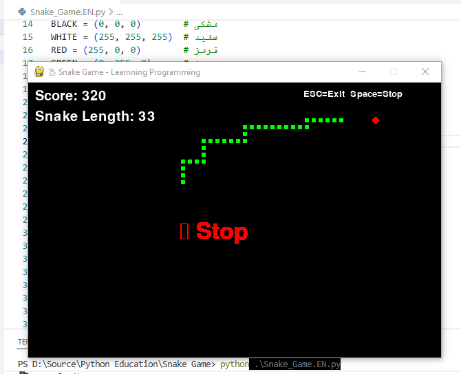
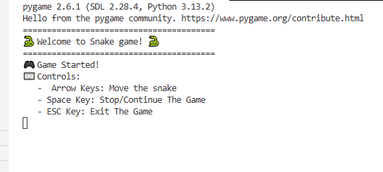

سایر بخشهای این مقاله:
بازی بساز برنامه نویسی با پایتون یاد بگیر - بخش اول
در بخش اول این مقاله، یادگیری برنامه نویسی را با رویکردی عملی و پروژهمحور آغاز کردیم. ضمن گام برداشتن در مسیر ساخت یک بازی کلاسیک و نوستالژیک، با تعدادی از مفاهیم بنیادین برنامهنویسی و ویژگیهای شاخص زبان پایتون آشنا شدیم. مفاهیمی نظیر متغیرها و انواع دادهها، ساختارهای کنترلی نظیر شرط if و اصل توالی، عملگرها و چندریختی آنها، توابع و اصل زیربرنامه، قلمرو دادهها و تفاوت متغیرهای محلی و سراسری، ساختارهای دادهای مانند لیست و تاپل، و اهمیت بستههای نرمافزاری در تسریع توسعه نرم افزار، همگی در خلال پیادهسازی بخشهای مختلف بازی مورد بررسی قرار گرفتند.
در این بخش از مقاله، به شکلی عمیقتر به بررسی کد بازی و تشریح مفاهیم پیشرفتهتر مرتبط با برنامهنویسی پایتون میپردازیم. حلقه اصلی بازی و نحوه مدیریت جریان اجرا با استفاده از ساختارهای تکرار، نحوه عملکرد لیستها و دستکاری پویای آنها برای انیمیشنسازی حرکت مار، و مدیریت رویدادهای ورودی از صفحه کلید برای دریافت فرامین کاربر، از جمله مباحثی هستند که به تفصیل مورد بررسی قرار خواهند گرفت.
اصل ماجرا
اولین گامهای عملی برای ساخت بازی با استفاده از یک بسته نرمافزاری قدرتمند برداشته میشود. پیش از هر چیز، باید مفهوم Package یا بسته را درک کنیم. بسته در برنامهنویسی، مجموعهای سازمانیافته از ماژولها و کتابخانههای از پیشنوشتهشده است که ابزارها و توابع آمادهای را برای انجام وظایف خاص در اختیار برنامهنویس قرار میدهد. اهمیت بستهها در آن است که برنامهنویس را از «اختراع دوباره چرخ» بینیاز میسازند؛ به جای نوشتن کدهای پیچیده سطح پایین برای مدیریت گرافیک، صدا یا ورودی کاربر، میتوان از راهحلهای آزموده و بهینهشده موجود در بستهها استفاده کرد.

تصویری از لحظه توقف موقت بازیموتور بازی
بسته مورد استفاده در این پروژه، Pygame نام دارد. Pygame یکی از محبوبترین و قدیمیترین کتابخانههای پایتون است که به طور خاص برای ساخت بازیهای دو بعدی و برنامههای چندرسانهای طراحی شده است. این بسته، لایهای انتزاعی بر روی کتابخانه قدرتمند SDL ایجاد میکند و کار با گرافیک، صدا و مدیریت رویدادها را بسیار ساده میکند. در ادامه نحوه راه اندازی و استفاده از این بسته را خواهیم دید.
import pygame
# راهاندازی pygame
pygame.init()
# ایجاد پنجره بازی
screen = pygame.display.set_mode((WINDOW_WIDTH, WINDOW_HEIGHT))
pygame.display.set_caption("🐍 Snake Game - Learnning Programming")
clock = pygame.time.Clock()برای استفاده از امکانات یک بسته یا کتابخانه در پایتون، ابتدا باید آن را به برنامه خود معرفی کنیم. این کار با دستور import انجام میشود. وقتی مینویسیم import pygame، در واقع به پایتون میگوییم که تمام کدها، توابع و کلاسهای آمادهای که در بسته Pygame نوشته شده است را برای ما بارگذاری کند تا بتوانیم از آنها استفاده کنیم.
اهمیت این دستور در آن است که بدون آن، پایتون هیچ شناختی از Pygame و ابزارهایش ندارد و هرگاه بخواهیم از تابعی مانند ()pygame.init استفاده کنیم، با خطا مواجه خواهیم شد. دستور import مانند کلیدی است که درِ جعبه ابزار را باز میکند و به ما اجازه میدهد به محتویات آن دسترسی داشته باشیم.
معمولاً در ابتدای برنامه، تمام کتابخانههای مورد نیاز را با دستور import فراخوانی میکنیم. سپس برای استفاده از هر تابع یا کلاس موجود در آن بسته، نام بسته را به همراه یک نقطه و نام تابع مورد نظر مینویسیم؛ مانند pygame.display.set_mode.
در خط شماره ۴ کد، دستور ()pygame.init فراخوانی میشود. این تابع، موتور Pygame را راهاندازی کرده و تمام زیرسیستمهای ضروری آن، مانند ماژول نمایشگر و ماژول مدیریت رویدادها را برای استفاده آماده میکند.
تابع pygame.display.set_mode وظیفه ایجاد پنجره اصلی بازی را بر عهده دارد. این تابع یک سطح نمایش (Surface) میسازد و ابعاد آن را از طریق تاپل (WINDOW_WIDTH, WINDOW_HEIGHT) دریافت میکند. شیء بازگشتی که در متغیر screen ذخیره میشود، بوم نقاشی ما خواهد بود و تمام عناصر بصری بازی بر روی آن ترسیم میشوند. سپس، با pygame.display.set_caption عنوانی برای نوار بالای پنجره تعیین میکنیم.
در پایتون، همه چیز شیء است. شیء را میتوان به یک بسته کوچک و مستقل تشبیه کرد که هم دادهها (ویژگیها) را در خود نگه میدارد و هم اعمالی که میتوان روی آن دادهها انجام داد (متدها). حتی توابع نیز در پایتون شیء محسوب میشوند. میتوان یک تابع را به یک متغیر نسبت داد، آن را به عنوان آرگومان به تابعی دیگر ارسال کرد یا حتی ویژگیهایی به آن اضافه نمود. این ویژگی که از مفاهیم «شیءگرایی محض» سرچشمه میگیرد، انعطافپذیری فوقالعادهای به زبان بخشیده است.
برای مثال، متغیر
screenکه باpygame.display.set_modeساختیم، یک شیء است که اطلاعاتی مانند عرض و ارتفاع صفحه را در خود دارد و میتوانیم متدfillرا برای رنگ کردن پسزمینه روی آن صدا بزنیم.اهمیت اشیاء در سازماندهی منطقی کد است. آنها با بستهبندی مفاهیم پیچیده در یک واحد منسجم، برنامهنویسی را سادهتر، کد را خواناتر و مدیریت پروژههای بزرگ را ممکن میسازند. در بازی Snake هم تمام اجزا مانند پنجره، ساعت و حتی خود مار را میتوان به عنوان اشیاء مستقل در نظر گرفت. پرداختن به مفاهیم مرتبط با برنامه نویسی شئ گرا خارج از مباحث این مقاله است و علاقمندان می توانند برای مطالعه بیشتر به منابع مرتبط رجوع کنند.
در نهایت، ()pygame.time.Clock یک شیء ساعت مجازی میسازد که کنترل دقیق نرخ فریم بازی را ممکن میکند. این شیء با متد tick خود تضمین میکند که حلقه اصلی بازی با سرعت ثابت و مشخصی (در این پروژه ۱۰ فریم بر ثانیه که البته با تغییر مقدار متغیر GAME_SPEED قابل تنظیم است) اجرا شود و سرعت حرکت مار در سیستمهای مختلف، یکسان باقی بماند. بدین ترتیب، تنها با چند خط کد، زیربنای گرافیکی و زمانبندی بازی خود را با اتکا به قدرت یک بسته تخصصی پایهریزی کردهایم.
بازی شروع می شود
اینجا قلب تپنده پروژه است، یعنی موتور اصلی. قبل از آنکه وارد چرخه تکرارشونده بازی بشویم، لازم است وضعیت اولیه آن را به دقت مشخص کنیم. پس، در ابتدای تابع game_loop، مجموعهای از متغیرها تعریف میشوند که هر کدام نقشی حیاتی در کنترل شرایط و روند بازی دارند.
# ============================================
# بخش 3: تابع اصلی بازی
# ============================================
def game_loop():
"""حلقه اصلی بازی"""
# وضعیت اولیه مار (وسط صفحه)
snake_x = WINDOW_WIDTH // 2
snake_y = WINDOW_HEIGHT // 2
# جهت حرکت اولیه (بدون حرکت)
change_x = 0
change_y = 0
# بدن مار (لیستی از مختصات)
snake_body = [[snake_x, snake_y]]
snake_length = 1
# ایجاد اولین غذا
food_position = generate_food(snake_body)
# امتیاز بازیکن
score = 0
# وضعیت بازی
game_over = False
game_paused = Falseاولین گروه از این متغیرها، موقعیت اولیه مار را تعیین میکنند. snake_x و snake_y مختصات سر مار را در خود نگه میدارند. با استفاده از عملگر تقسیم صحیح //، عرض و ارتفاع پنجره را بر دو تقسیم کردهایم تا مار دقیقاً از مرکز صفحه کار خود را شروع کند. این محاسبه ساده، نمونهای از کاربرد عملگرهای ریاضی در حل مسائل عملی است.
و اما بعد، change_x و change_y جهت و میزان حرکت مار در هر گام را مشخص میکنند. مقداردهی اولیه آنها با صفر به این معناست که مار در لحظه شروع، ساکن است و تنها پس از فشاردادن یکی از کلیدهای جهتنما توسط کاربر شروع به حرکت می کند. این متغیرها در طول بازی و با دریافت ورودی از صفحه کلید، بهروزرسانی میشوند.
متغیر snake_body که از نوع لیست تعریف شده، یکی از کلیدیترین ساختارهای دادهای بازی است. این لیست، مختصات تمام بخشهای بدن مار را ذخیره میکند. در ابتدا، فقط یک عضو دارد: مختصات سر مار. متغیر snake_length هم طول فعلی مار را نشان میدهد و با خوردن هر طعمه افزایش مییابد.
بعد، با فراخوانی تابع generate_food و ارسال snake_body به عنوان آرگومان، موقعیت اولین طعمه را به صورت تصادفی تولید میکنیم و در food_position ذخیره مینماییم. ارسال بدن مار به این تابع تضمین میکند که طعمه روی خود مار ظاهر نشود. در ادامه پیاده سازی این تابع را خواهیم دید.
در نهایت، سه متغیر مهم برای مدیریت جریان بازی تعریف میشوند: score برای نگهداری امتیاز بازیکن که از صفر شروع میشود، game_over که وضعیت پایان بازی را نشان میدهد و مقدار اولیه آن False است، و game_paused برای کنترل حالت توقف موقت بازی که آن هم با False مقداردهی میشود. این مقادیر منطقی در حلقه اصلی بازی پیوسته بررسی میشوند تا تصمیم مناسب گرفته شود.

پیامهای ابتدایی نمایش داده شده در کنسول بازیپس از تعریف وضعیت اولیه بازی، نوبت به برقراری ارتباط با بازیکن میرسد. یک برنامه مناسب باید کاربر را در جریان آنچه رخ میدهد قرار دهد و او را راهنمایی کند. به همین منظور، با استفاده از تابع آشنای print، مجموعهای از پیامهای آگاهی دهنده را در کنسول نمایش میدهیم.
print("🎮 Game Started!")
print("⌨️ Controls:")
print("Arrow Keys: Move the snake")
print("Space Key: Stop/Continue The Game")
print("ESC Key: Exit The Game")نخستین پیام، یعنی "!Game Started 🎮"، به بازیکن اعلام میکند که بازی با موفقیت آغاز شده و همه چیز آماده است. سپس، بخش راهنمای کنترلها را با عنوان ":Controls ⌨️" آغاز میکنیم تا بازیکن بداند برای تعامل با بازی از چه کلیدهایی باید استفاده کند.
در خطوط بعدی، عملکرد هر کلید توضیح داده میشود: کلیدهای جهتنما برای هدایت مار در چهار جهت اصلی، کلید Space برای توقف و ادامه موقت بازی (که متغیر game_paused را تغییر میدهد)، و کلید Escape برای خروج از برنامه.
تکرار بی پایان
منطق موتور اصلی بازی بر پایه تکرار بیپایان دنبالهای از عملیات استوار است. به زبان ساده، بازی باید لحظه به لحظه صفحه را بهروزرسانی کند، ورودی کاربر را بخواند و وضعیت را تغییر دهد. برای پیادهسازی این چرخه مداوم، از یک حلقه تکرار شرطی استفاده میکنیم که با دستور while ساخته میشود.
# ==========================================
# حلقه اصلی بازی (تا وقتی بازی تمام نشده)
# ==========================================
while not game_over:ساختار :while not game_over دقیقاً به این معناست: «تا زمانی که بازی به پایان نرسیده است، دستورات داخل این حلقه را بارها و بارها تکرار کن». متغیر game_over که پیشتر مقدار False گرفته بود، نقش نگهبان این حلقه را ایفا میکند. به محض آنکه در جریان بازی، این متغیر به True تغییر یابد (مثلاً در اثر برخورد مار با دیوار)، شرط not game_over نادرست شده و حلقه متوقف میشود. این چرخه پیوسته، همان ضربان قلب بازی ماست که آن را زنده نگه میدارد و تا لحظه شکست بازیکن به کار خود ادامه میدهد. بدون این حلقه، بازی تنها یک تصویر ثابت بیش نبود.
نخستین و شاید مهمترین گام در هر چرخه از حلقه اصلی بازی، بررسی رویدادها و ورودیهای کاربر است. در دنیای برنامهنویسی بازی، هر اتفاقی که در محیط بازی رخ میدهد، از فشردن یک کلید توسط کاربر گرفته تا بستن پنجره، در قالب یک «رویداد» یا Event ثبت میشود. کتابخانه pygame تمام این رویدادها را در یک صف ذخیره میکند و ما میتوانیم با مرور آنها، واکنش مناسب را نشان دهیم.
صف رویدادها در pygame مانند یک صف انتظار عمل میکند. هر بار که کاربر کلیدی را فشار میدهد، ماوس را حرکت میدهد یا پنجره را میبندد، یک رویداد جدید به انتهای این صف اضافه میشود. تابع
()pygame.event.getتمام رویدادهای در انتظار را به ترتیب وقوع از صف خارج کرده و به ما تحویل میدهد تا به آنها رسیدگی کنیم. این مکانیزم تضمین میکند هیچ ورودی از دست نرود.
برای این منظور، از یک حلقه for استفاده میکنیم که روی خروجی تابع ()pygame.event.get حرکت میکند. حلقه :()for event in pygame.event.get به ما میگوید: «تکتک این رویدادها را بردار و بررسی کن».
درون این حلقه، با استفاده از ساختار شرطی if، نوع هر رویداد را مشخص میکنیم. اگر event.type برابر با pygame.QUIT باشد، یعنی کاربر روی دکمه بستن پنجره کلیک کرده است. در این صورت، متغیر game_over را True میکنیم تا حلقه اصلی بازی متوقف شود و برنامه پایان یابد.
در پایتون، مفهوم ثابت (Constant) به متغیری اشاره دارد که مقدار آن در طول اجرای برنامه تغییر نمیکند. اگرچه پایتون به صورت درونی سازوکاری برای تعریف ثابتهای تغییرناپذیر ندارد، اما طبق قرارداد، نام متغیرهایی که با حروف بزرگ نوشته میشوند (مانند
WINDOW_WIDTHوBLACK) به عنوان ثابت در نظر گرفته میشوند و برنامهنویس نباید مقدار آنها را تغییر دهد.مقادیر شمارشی (Enumerations) نیز نوع خاصی از ثابتها هستند که مجموعهای از مقادیر نامگذاریشده و مرتبط را تعریف میکنند. در pygame،
pygame.QUITنمونهای از این مقادیر شمارشی است که یک عدد صحیح از پیش تعریفشده است و نمایانگر نوع خاصی از رویداد (بستن پنجره) میباشد. به جای استفاده از اعداد جادویی مبهم مانند256، pygame این ثابتهای معنادار را استفاده میکند تا کد خواناتر و کمخطاتر شود.pygame.KEYDOWN،pygame.K_SPACEوpygame.K_ESCAPEنیز همگی مقادیر شمارشی هستند که مجموعه رویدادها و کلیدهای صفحه کلید را به شکلی قابل فهم نامگذاری کردهاند. استفاده از این ثابتها، احتمال خطا را کاهش و وضوح کد را افزایش میدهد.
چه کلیدی رو زدی؟
بخش اصلی مدیریت رویدادها به فشردن کلیدها اختصاص دارد. شرط event.type == pygame.KEYDOWN بررسی میکند که آیا یک کلید فشرده شده است یا خیر. سپس، با بررسی event.key مشخص میکنیم کدام کلید فشرده شده است. برای کلیدهای جهتنما، یک شرط اضافی نیز وجود دارد: مثلاً change_x == 0 تضمین میکند که مار نتواند مستقیماً در خلاف جهت حرکت کند و به درون خود بازگردد. با فشردن هر کلید، مقادیر change_x و change_y متناسب با جهت جدید تنظیم میشوند.
# ----------------------------------
# مدیریت رویدادها (Events)
# ----------------------------------
for event in pygame.event.get():
# بستن پنجره
if event.type == pygame.QUIT:
game_over = True
# فشردن کلیدها
if event.type == pygame.KEYDOWN:
# کلیدهای جهتنما
if event.key == pygame.K_LEFT and change_x == 0:
change_x = -BLOCK_SIZE
change_y = 0
elif event.key == pygame.K_RIGHT and change_x == 0:
change_x = BLOCK_SIZE
change_y = 0
elif event.key == pygame.K_UP and change_y == 0:
change_y = -BLOCK_SIZE
change_x = 0
elif event.key == pygame.K_DOWN and change_y == 0:
change_y = BLOCK_SIZE
change_x = 0
# توقف/ادامه بازی
elif event.key == pygame.K_SPACE:
game_paused = not game_paused
if game_paused:
print("⏸️ The Game is Stoped")
else:
print("▶️ The Game is continued")
# خروج با ESC
elif event.key == pygame.K_ESCAPE:
game_over = Trueکلید Space برای توقف و ادامه بازی در نظر گرفته شده است. با فشردن آن، مقدار متغیر game_paused معکوس میشود و پیامی متناسب با وضعیت جدید در کنسول چاپ میگردد. همچنین کلید Escape راهی سریع برای خروج از بازی فراهم میکند و با تنظیم game_over = True، به حلقه اصلی پایان میدهد. این ساختار ساده اما قدرتمند، ارتباط میان بازیکن و دنیای بازی را ممکن میکند.
لطفاً یک لحظه توقف کن
پس از پایان بررسی رویدادها، نوبت به اعمال تغییرات ناشی از آنها بر وضعیت بازی میرسد. اما پیش از هر اقدامی، باید وضعیت توقف بازی را بررسی کنیم. اگر بازیکن کلید Space را فشرده باشد، متغیر game_paused مقدار True گرفته است. در این حالت، با استفاده از یک شرط ساده، بدنه اصلی بهروزرسانی حرکت مار را دور میزنیم. یک پیام توقف روی صفحه نمایش داده میشود، صفحه بهروزرسانی میگردد و دستور continue ما را مستقیماً به ابتدای حلقه while بازمیگرداند تا چرخه بعدی آغاز شود. بدین ترتیب، بازی در جای خود ثابت میماند.
# اگر بازی متوقف شده، رویدادها رو بررسی کن ولی حرکت نده
if game_paused:
show_message("⏸️ Stop", RED, 50, WINDOW_WIDTH//2 - 80, WINDOW_HEIGHT//2)
pygame.display.update()
continueshow_message یک تابع کمکی است که وظیفه نمایش متنی مشخص را بر روی صفحه بازی بر عهده دارد. این تابع، پیام مورد نظر (مانند “Stop ⏸️”) را با رنگ، اندازه و مختصات تعیینشده روی بوم بازی ترسیم میکند.
()pygame.display.update یکی از توابع حیاتی pygame است. هر تغییری که بر روی سطح نمایش screen اعمال میکنیم، بلافاصله روی صفحه نمایش داده نمیشود، بلکه در حافظه پنهان باقی میماند. فراخوانی ()display.update این تغییرات را از حافظه به صفحه نمایش منتقل میکند و باعث میشود بازیکن نتیجه اعمال ما را ببیند. بدون این فراخوانی، صفحه بازی همواره ثابت و بدون تغییر به نظر خواهد رسید.
دستورات
continueوbreakدو ابزار کنترلی مهم در حلقههای تکرار پایتون هستند که جریان عادی حلقه را تغییر میدهند.دستور
continueهنگامی که در بدنه یک حلقه اجرا شود، اجرای ادامه دستورات آن دور از حلقه را متوقف کرده و حلقه را مستقیماً به ابتدای چرخه بعدی میبرد. در واقع،continueمیگوید: «این دور را نیمهکاره رها کن و برو سراغ دور بعدی». در بازی ما، وقتی بازی متوقف است، باcontinueاز اجرای کدهای حرکت مار صرفنظر کرده و مستقیماً به ابتدای حلقهwhileبازمیگردیم.در مقابل، دستور
breakبه طور کامل از حلقه خارج میشود و اجرای برنامه را به اولین خط پس از بدنه حلقه منتقل میکند.breakمانند کلید خروج اضطراری عمل میکند و میگوید: «کار این حلقه تمام است، برویم بیرون». این دو دستور، کنترل دقیق و انعطافپذیری بر جریان اجرای حلقهها فراهم میکنند.
حرکت مار
پس از آنکه مطمئن شدیم بازی در حالت توقف نیست، نوبت به یکی از اساسیترین عملیات در چرخه بازی میرسد: بهروزرسانی موقعیت مار. این کار با دو خط کد بسیار ساده انجام میشود.مختصات فعلی سر مار که در متغیرهای snake_x و snake_y ذخیره شدهاند، با مقادیر change_x و change_y جمع بسته میشوند.
عملگر =+ که یک عملگر انتساب ترکیبی است، مقدار سمت راست را با مقدار فعلی متغیر جمع کرده و حاصل را دوباره در همان متغیر ذخیره میکند. برای نمونه، اگر مار به سمت راست در حال حرکت باشد، change_x برابر با BLOCK_SIZE (یعنی ۱۰ پیکسل) و change_y برابر با صفر است. در نتیجه، snake_x به اندازه یک خانه به سمت راست جابهجا میشود و snake_y بدون تغییر باقی میماند.
این دو خط کد، قلب مکانیک حرکت مار را تشکیل میدهند. در هر فریم از بازی (که سرعت آن توسط شیء clock تنظیم میشود)، این عملیات یک بار اجرا میگردد و بدین ترتیب، توهم حرکت پیوسته مار بر روی صفحه ایجاد میشود. مقادیر change_x و change_y نیز همانطور که پیشتر دیدیم، بر اساس ورودی کاربر از صفحه کلید و در بخش مدیریت رویدادها تعیین میشوند.
این جداسازی منطق (دریافت ورودی در یک بخش و اعمال تغییرات در بخش دیگر) نمونهای از طراحی منظم و ساختیافته برنامه است که اشکالزدایی و توسعه آن را آسانتر میکند.
رفتیم تو دیوار؟
یکی دیگر از رویدادهای حیاتی در جریان بازی که باید به طور مداوم کنترل شود، بررسی وضعیت برخورد مار با دیوارهای پیرامونی صفحه است. در صورتی که سر مار از محدوده تعیینشده خارج شود، به معنای پایان بازی خواهد بود. این بررسی با یک شرط منطقی مرکب پیادهسازی میشود که چهار حالت مختلف خروج از صفحه را پوشش میدهد.
# ----------------------------------
# بررسی برخورد با دیوارها
# ----------------------------------
if (snake_x >= WINDOW_WIDTH or snake_x < 0 or
snake_y >= WINDOW_HEIGHT or snake_y < 0):
print("💥 Hit the wall! Game is over.")
game_over = Trueشرط snake_x >= WINDOW_WIDTH بررسی میکند که آیا مختصات افقی سر مار از لبه سمت راست صفحه فراتر رفته است یا خیر. به طور مشابه، snake_x < 0 خروج از لبه چپ را کنترل میکند. در بعد عمودی نیز snake_y >= WINDOW_HEIGHT خروج از لبه پایین و snake_y < 0 خروج از لبه بالای صفحه را تشخیص میدهد. استفاده از عملگر منطقی or میان این چهار شرط بدان معناست که برقراری تنها یکی از این حالتها برای پایان بازی کافی است. به بیان دیگر، اگر سر مار از هر یک از چهار دیوار عبور کند، بازی به اتمام میرسد.
علاوه بر عملگر
or، پایتون دو عملگر منطقی اصلی دیگر نیز دارد. نخست، عملگرandکه تنها زمانی نتیجهTrueرا بازمیگرداند که هر دو عبارت شرطی برقرار باشند. برای نمونه، در بازی میتوان بررسی کرد که آیا مختصات مار هم از عرض و هم از ارتفاع صفحه خارج شده است. دوم، عملگرnotاست که نتیجه یک عبارت منطقی را معکوس میکند. اگر شرطیTrueباشد،notآن را بهFalseتبدیل میکند و برعکس. نمونه آشنای آن، شرط حلقه اصلی بازی ماست:while not game_overکه میگوید «تا زمانی که بازی تمام نشده است». این سه عملگر، ابزارهای پایهای برای ساخت عبارات شرطی پیچیده و کنترل جریان برنامه هستند.
هنگامی که یکی از این شرایط محقق شود، دو اقدام صورت میگیرد: اول، با استفاده از تابع print پیامی گویا در کنسول نمایش داده میشود که علت پایان بازی را به بازیکن اطلاع میدهد. دوم، متغیر game_over مقدار True را میپذیرد. این تغییر مقدار، شرط حلقه اصلی while not game_over را نقض کرده و باعث خروج از چرخه تکرار و در نتیجه توقف کامل بازی میشود. بدین ترتیب، یک مکانیزم ساده اما دقیق برای تعیین مرزهای زمین بازی و اعمال قوانین آن پیادهسازی شده است. این بخش نمونهای مناسب از کاربرد عملگرهای مقایسهای و منطقی در کنار یکدیگر برای پیادهسازی منطق تصمیمگیری در برنامه است.
سر و ته مار رو جابجا کن
در ادامه چرخه بهروزرسانی بازی، حال باید تغییرات موقعیت مار را به ساختار دادهای بدن آن اعمال کنیم. این فرآیند شامل دو مرحله اساسی است: افزودن سر جدید و حذف دم قبلی.
در مرحله اول، با استفاده از متد append که ویژه لیستها در پایتون است، مختصات جدید سر مار را به انتهای لیست snake_body اضافه میکنیم. [snake_x, snake_y] یک لیست دو عضوی است که موقعیت فعلی سر مار را نشان میدهد و با append به انتهای بدن مار الصاق میشود. این بدان معناست که سر مار همواره آخرین عضو لیست خواهد بود.
# اضافه کردن موقعیت جدید به بدن مار
snake_body.append([snake_x, snake_y])
# حذف دم مار اگر غذا نخورده باشیم
if len(snake_body) > snake_length:
del snake_body[0]مرحله دوم، حذف بخش انتهایی بدن یا همان دم مار است. اما این حذف همیشگی نیست، بلکه مشروط به یک شرط مهم است: if len(snake_body) > snake_length. تابع len طول فعلی لیست snake_body را بازمیگرداند و آن را با snake_length مقایسه میکند. اگر طول لیست بدن از طول مجاز مار( طول فعلی آن) بیشتر باشد، به این معناست که مار در آخرین حرکت غذایی نخورده است و باید طولش ثابت بماند و بنابراین -به همان میزان که به ناحیه سرش اضافه شد- از ناحیه دم کوتاه میشود. در این حالت، دستور del snake_body[0] اولین عضو لیست (قدیمیترین بخش بدن) را حذف میکند.
نکته هوشمندانه این مکانیزم در آن است که اگر مار به تازگی غذایی خورده باشد و snake_length افزایش یافته باشد، شرط len(snake_body) > snake_length در این لحظه برقرار نخواهد بود. بنابراین دم حذف نشده و طول مار عملاً یک واحد افزایش مییابد. این دو خط کد ساده، در کنار یکدیگر، هم حرکت نرم و روان مار را شبیهسازی میکنند و هم مکانیزم رشد آن با خوردن طعمه را پیادهسازی مینمایند. بدین ترتیب، مفاهیمی مانند مدیریت پویای لیستها، محاسبه طول ساختارهای دادهای و کار با ایندکسها به شکلی کاملاً عملی در خدمت منطق بازی قرار میگیرند.
خوردم به خودم
یکی دیگر از حالتهای پایان بازی زمانی رخ میدهد که طول مار به اندازه کافی افزایش یافته باشد و بازیکن مسیری اشتباه را انتخاب کند بطوریکه سر مار از نقطهای عبور کند که هنوز بخشی از بدنش در آن قرار دارد. به بیان سادهتر، مار نباید خودش را گاز بگیرد. این قاعده، چالش اصلی بازی Snake راست و مدیریت آن با افزایش طول مار سختتر میشود.
# ----------------------------------
# بررسی برخورد مار با خودش
# ----------------------------------
for block in snake_body[:-1]:
if block == [snake_x, snake_y]:
print("😵 The snake ate itself! The game is over")
game_over = True
برای پیادهسازی این قسمت، از یک حلقه for استفاده میکنیم که بر روی تمام اعضای لیست snake_body، به جز آخرین عضو، عبور میکند. عبارت snake_body[:-1] یک برش از لیست میسازد که شامل همه عناصر به جز عنصر آخر است. دلیل این کار آن است که آخرین عضو لیست snake_body همان مختصات سر مار است که در مرحله قبل با append اضافه کردیم و بررسی برخورد سر با خودش منطقاً بیمعنا خواهد بود.
بخش
[1-:]در دستور فوق اصطلاحاً برش (Slice) یا اسلایسینگ نام دارد. اسلایسینگ به شما امکان میدهد زیرمجموعهای از یک لیست، رشته یا تاپل را استخراج کنید.در این مثال خاص،
[1-:]به معنای «همه اعضا به جز آخرین عضو» است. نحو کلی اسلایس[start:stop:step]میباشد که در اینجاstartوstepحذف شدهاند (یعنی از ابتدا و با گام ۱) وstopبرابر با ۱- است. ایندکس ۱- در پایتون به آخرین عضو یک دنباله اشاره دارد و از آنجا کهstopشامل اسلایس نمیشود، نتیجه نهایی همه اعضا به جز آخری خواهد بود.
در ادامه نمونه ها و مثالهای متعدد از این ویژگی را خواهیم دید:
# تعریف یک لیست نمونه
numbers = [0, 1, 2, 3, 4, 5, 6, 7, 8, 9]
# استخراج از ایندکس ۲ تا ۵ (۵ شامل نمیشود)
slice1 = numbers[2:5] # نتیجه: [2, 3, 4]
# استخراج از ابتدا تا ایندکس ۴
slice2 = numbers[:4] # نتیجه: [0, 1, 2, 3]
# استخراج از ایندکس ۶ تا انتها
slice3 = numbers[6:] # نتیجه: [6, 7, 8, 9]
# استخراج کل لیست با گام ۲ (یکی در میان)
slice4 = numbers[::2] # نتیجه: [0, 2, 4, 6, 8]
# استخراج از ایندکس ۱ تا ۸ با گام ۳
slice5 = numbers[1:8:3] # نتیجه: [1, 4, 7]
# معکوس کردن لیست با گام منفی
slice6 = numbers[::-1] # نتیجه: [9, 8, 7, 6, 5, 4, 3, 2, 1, 0]
# چهار عضو آخر لیست
slice7 = numbers[-4:] # نتیجه: [6, 7, 8, 9]در هر گام از این حلقه، متغیر block یکی از قطعات بدن مار را در خود نگه میدارد. سپس با شرط if block == [snake_x, snake_y] بررسی میکنیم که آیا مختصات فعلی سر مار با مختصات یکی از قطعات بدنش یکسان است یا خیر. اگر این شرط برقرار باشد، یعنی مار با خودش برخورد کرده است. در این حالت، مشابه برخورد با دیوار، پیام مناسبی در کنسول چاپ شده و متغیر game_over مقدار True میگیرد تا حلقه اصلی بازی پایان پذیرد.
غذا خوردم
هرگاه سر مار با موقعیت غذای تصادفی موجود در صفحه برخورد کند، نشانه آن است که بازیکن موفق به خوردن طعمه شده است. در این حالت، طول مار باید از ناحیه دم یک واحد افزایش یابد. کد زیر منطق این بخش حیاتی از گیمپلی را به شکلی مختصر و کارآمد پیادهسازی میکند.
# ----------------------------------
# بررسی خوردن غذا
# ----------------------------------
if [snake_x, snake_y] == food_position:
food_position = generate_food(snake_body)
snake_length += 1
score += 10
print(f"🍎 New food! Score: {score}")در خط اول، شرط :if [snake_x, snake_y] == food_position بررسی میکند که آیا مختصات فعلی سر مار دقیقاً با مختصات طعمه یکی شده است یا خیر. این مقایسه مستقیم دو لیست، یکی از قابلیتهای کاربردی پایتون است که امکان بررسی تطابق تکبهتک اعضای دو لیست را فراهم میکند. به محض برقرار شدن این شرط، چهار اقدام متوالی صورت میگیرد.
اول، تابع generate_food مجدداً فراخوانی میشود تا موقعیت جدیدی برای طعمه بعدی تعیین کند. آرگومان snake_body به این تابع ارسال میشود تا اطمینان حاصل شود که طعمه جدید روی بدن مار ظاهر نمیشود. دوم، متغیر snake_length یک واحد افزایش مییابد. این افزایش طول، در مکانیزم حذف دم که پیشتر بررسی کردیم، اثر مستقیم دارد: در دور بعدی حلقه، شرط len(snake_body) > snake_length برقرار نخواهد بود و دم حذف نمیشود، در نتیجه طول مار عملاً رشد میکند. سوم، متغیر score به میزان ۱۰ واحد افزایش مییابد تا پیشرفت بازیکن مشخص شود.
و در نهایت، با استفاده از f-string که روشی مدرن و خوانا برای قالببندی رشتهها در پایتون است، پیامی حاوی نماد سیب و امتیاز جدید در کنسول چاپ میشود.
رشته ها در پایتون
رشتهها یا Stringها یکی از پرکاربردترین انواع داده در پایتون هستند که برای ذخیره و پردازش متن به کار میروند. اهمیت آنها در نمایش پیامها، ثبت گزارشها، ارتباط با کاربر و قالببندی خروجی برنامه آشکار میشود. پایتون روشهای متعددی برای ساخت و مدیریت رشتهها ارائه میدهد: رشتههای ساده با نقل قول تکی یا دوتایی، رشتههای چندخطی با سه نقل قول، و رشتههای فرمتشده که در کد زیر نمونه هایی از آنها را آورده ام.
# رشته با نقل قول تکی
message1 = 'Hello, World!'
# رشته با نقل قول دوتایی
message2 = "Python is fun!"
# رشته چندخطی با سه نقل قول تکی
long_text1 = '''This is a
multi-line
string example.'''
# رشته چندخطی با سه نقل قول دوتایی
long_text2 = """You can also use
double quotes for
multi-line strings."""
# f-string برای قالببندی رشتهها
name = "Ali"
score = 50
formatted = f"Player: {name}, Score: {score}"
# f-string با عبارات محاسباتی
price = 100
quantity = 3
total = f"Total: {price * quantity} Toman"در میان روشهای قالببندی، f-string ها که از نسخه ۳.۶ پایتون معرفی شدند، مدرنترین و خواناترین شیوه هستند. یک f-string با پیشوند f پیش از علامت نقل قول آغاز میشود. داخل این رشته، هر عبارتی که درون آکولاد {} قرار گیرد، در زمان اجرا محاسبه شده و نتیجه آن در متن جایگزین میشود. برای نمونه، در کد print(f"🍎 New food! Score: {score}")، مقدار متغیر score به طور خودکار به رشته تبدیل شده و در خروجی نمایش داده میشود. این ویژگی، ترکیب متن و مقادیر متغیرها را بدون نیاز به عملگر الحاق + یا تابع format، بسیار ساده و شهودی میسازد و احتمال خطا را کاهش میدهد.